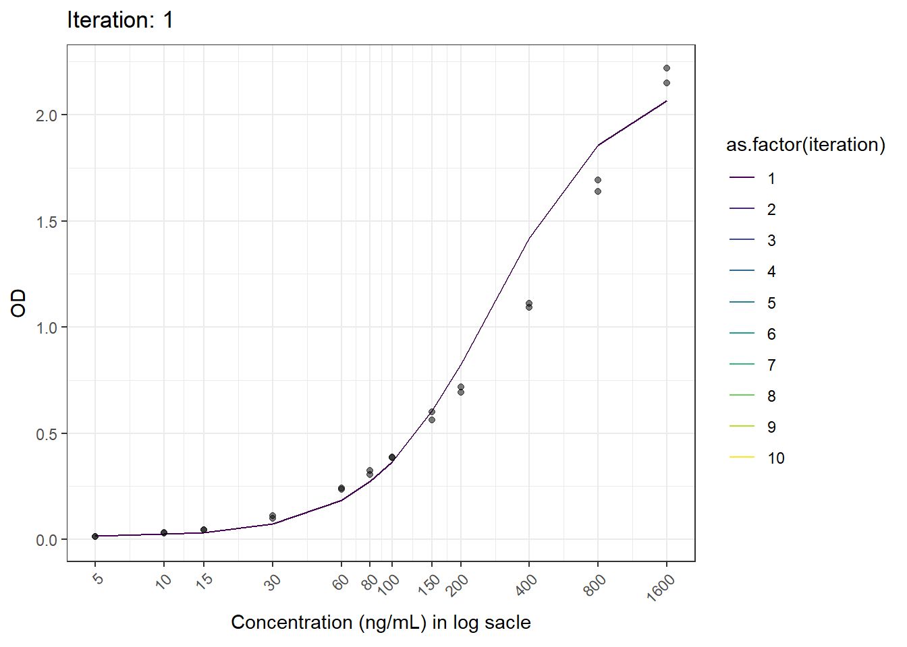

Chapter 6 Applying the LM Algorithm to LBA data
In this chapter, we’ll apply the LM algorithm to fit a 5 parameter logistic (5 PL) curve to LBA data, specifically focusing on calibration curve fitting.
6.1 5 PL curve
The 5PL curve is commonly used to describe non-linear relationships, such the one found in bioassay where the assay response changes as the concentration of a substance increases. The 5PL equation is:
\[ Response = D+ \frac{A-D}{\left(1+\left(\frac{x}{c}\right)^B \right)^G} \]
| Symbol | Parameter | Name | Notice |
|---|---|---|---|
| D | w1 | Infinite x asymptote | The maximum response (upper asymptote) |
| B | w2 | Slope/Hill | Controls how steep the curve is (representing the rate of change of response) |
| C | w3 | Inflection point | The concentration where the steepest change occurs. |
| A | w4 | Small x asymptote | The minimum response (lower asymptote) |
| G | w5 | Asymmetric factor | Controls the symmetry of the curve (how “skewed” it is) |
If the assay response increases with concentration, the parameters are used as described. If the assay response decreases with increasing concentration, parameters A and D should be switched.
6.2 Data set
We begin with pseudo datasets containing the assay responses (OD values) of calibration standard samples. Each run includes 12 levels of calibration standard samples, with a total of over 100 runs. Each standard sample was measured in duplicate. The first 2 and the last 3 levels were not used for quantification but not excluded from the fitting process, as they help curve fitting. These are called anchor points. Below is an example of how to prepare and structure the data to make a curve fitting for each run:
df_temp.0 <- read.csv(here("data","cal.std.od.csv"), header = F)
od <- c()
for(i in 1:nrow(df_temp.0)) {
od <- rbind(od, t(df_temp.0[i,]))
}
calib.0 <- c()
for (i in 1:12){
if(i < 10){
calib.1 <- paste0("STD0", i)
calib.0 <- c(calib.0, calib.1)
} else{
calib.1 <- paste0("STD", i)
calib.0 <- c(calib.0, calib.1)
}
}
conc.0 <- c(5, 10, 15, 30, 60, 80, 100, 150, 200, 400, 800, 1600)
rep.0 <- rep(c(1, 2), each=12)
run.no <- nrow(df_temp.0)/2
calib <- rep(calib.0, 2*run.no)
conc <- rep(conc.0, 2*run.no)
rep <- rep(rep.0, run.no)
run <- rep(seq(1, run.no), each=24)
df_temp <- data.frame(calib, conc, rep, od, run)
colnames(df_temp) <- c("calb", "conc", "rep", "od", "run")The data structure is as shown below (it is called long form data).
## calb conc rep od run
## V1 STD01 5 1 0.032825 1
## V2 STD02 10 1 0.040097 1
## V3 STD03 15 1 0.071710 1
## V4 STD04 30 1 0.193617 1
## V5 STD05 60 1 0.319059 1
## V6 STD06 80 1 0.495708 1
## V7 STD07 100 1 0.595597 1
## V8 STD08 150 1 0.871226 1
## V9 STD09 200 1 1.411576 1
## V10 STD10 400 1 1.575802 1
## V11 STD11 800 1 2.375823 1
## V12 STD12 1600 1 2.786388 1
## V1.1 STD01 5 2 0.027876 1
## V2.1 STD02 10 2 0.035754 1
## V3.1 STD03 15 2 0.067872 1
## V4.1 STD04 30 2 0.181901 1
## V5.1 STD05 60 2 0.321483 1
## V6.1 STD06 80 2 0.506717 1
## V7.1 STD07 100 2 0.596607 1
## V8.1 STD08 150 2 0.854561 1
## V9.1 STD09 200 2 1.517323 1
## V10.1 STD10 400 2 1.842644 1
## V11.1 STD11 800 2 2.534292 1
## V12.1 STD12 1600 2 3.490257 1
## V1.2 STD01 5 1 0.040804 2
## V2.2 STD02 10 1 0.039087 2
## V3.2 STD03 15 1 0.063529 2
## V4.2 STD04 30 1 0.140289 2
## V5.2 STD05 60 1 0.321988 2
## V6.2 STD06 80 1 0.430866 26.3 Initial parameter estimation
Before fitting the 5PL curve, we need to estimate the initial values for the parameters.The initial values will also be directly estimated from the calibration standard sample data.Here’s how to compute them:
- w1: average of the maximum assay response (Max)
- w4: average of the minimum assay response (Min)
Next, we calculate the logit transformation to linearize the data:
\[ Logit(Y) = ln \left( \frac{Y-Min}{Max-Y}\right)\]
We then fit a simple linear model using the transformed data and estimate the parameters:
\[ logit(y) = intercept \ + slope*ln(X) \] and,
w2: abs(slope)
w3: EXP(-intercept / slope)
w5: 1
We can automatically compute parameters values for each run by running the following code:
sumStart <- function(rawdata){
df_temp.0 <- data.frame(run=unique(rawdata$run), Max = NA, Slope = NA, C = NA, Min = NA, M= NA)
run.list <- unique(rawdata$run)
for (i in run.list) {
df_temp.i <- rawdata[rawdata$run == i, ]
max <- mean(c(df_temp.i$od[df_temp.i$rep == 1 & df_temp.i$conc==max(df_temp.i$conc)], df_temp.i$od[df_temp.i$rep == 2 & df_temp.i$conc==max(df_temp.i$conc)]))
min <- mean(c(df_temp.i$od[df_temp.i$rep == 1 & df_temp.i$conc==min(df_temp.i$conc)], df_temp.i$od[df_temp.i$rep == 2 & df_temp.i$conc==min(df_temp.i$conc)]))
df_temp.i$logit.y <- log((df_temp.i$od-min)/(max-df_temp.i$od))
df_temp.i$logit.y[is.nan(df_temp.i$logit.y)|is.infinite(df_temp.i$logit.y)] <- NA
model <- lm(logit.y~log(conc), df_temp.i)
slope <- coef(model)[[2]]
B <- abs(slope)
ed50 <- exp(-coef(model)[[1]]/slope)
df_temp.0$Max[df_temp.0$run == i] <- max
df_temp.0$Min[df_temp.0$run == i] <- min
df_temp.0$C[df_temp.0$run == i] <- ed50
df_temp.0$Slope[df_temp.0$run == i] <- B
df_temp.0$M[df_temp.0$run == i] <- 1
}
df_temp.0
}
df_start <- sumStart(df_temp)As the result, the initial parameters for each run will be constructed as shown below.
## run Max Slope C Min M
## 1 1 3.138323 1.559031 293.7739 0.0303505 1
## 2 2 3.250432 1.687841 288.8220 0.0391880 1
## 3 3 3.309871 1.605703 250.8145 -0.0742350 1
## 4 4 3.553180 1.563305 270.0125 0.0263610 1
## 5 5 3.779066 1.499061 298.6959 0.0225735 1
## 6 6 3.568785 1.781262 243.4372 0.0254520 1
## 7 7 3.618577 1.675017 224.6187 0.0312090 1
## 8 8 3.452584 1.596580 242.7640 0.0289365 1
## 9 9 3.094943 1.517485 366.1966 0.0175235 1
## 10 10 3.070198 1.507721 315.1467 0.0210080 16.4 Example of Code
Here is my custom code to apply the LM algorithm to 5PL curve fitting. This code not only fits the data (optimization of parameters) but also saves useful information obtained from each iteration, specifically to visualize the iteration process so we can see how a calibration curve fits the data (refer to the codes marked with #) .
LM.custom <- function(w0, data, run) {
w <- w.previous <- w0
k <- 0
feval <- 0
mu <- 1e-2
ftol <- 1e-6
ptol <- 1e-6
gtol <- 0
maxiter <- 200
maxfev <- 600
y <- data$od[data$run == run]
x_data <- unique(data$conc)
n <- length(x_data)
df_temp <- data.frame(x = unique(data$conc), od = y)
f <- function(w0) {
model <- w0[1] + (w0[4] - w0[1]) / (1 + (df_temp$x / w0[3])^w0[2])^w0[5]
return(model)
}
chi.squre.fn <- function(w) {
chi.sq <- sum((y - f(w))^2)
return(chi.sq)
}
norm.fn <- function(x) sqrt(sum(x^2))
initial.chisq <- previous.chisq <- chi.squre.fn(w)
calculate.cosine.angles <- function(y, w) {
r <- y - f(w)
J <- numDeriv::jacobian(f, w)
norm.r <- sqrt(sum(r^2))
cosine.angles <- numeric(ncol(J))
for (i in 1:ncol(J)) {
J.col <- J[, i]
norm.J.col <- sqrt(sum(J.col^2))
dot.product <- sum(J.col * r)
cosine.angles[i] <- dot.product / (norm.J.col * norm.r)
}
return(cosine.angles)
}
df_animation <- data.frame(iteration = integer(0), x = numeric(0), fitted.y = numeric(0), od = numeric(0)) #
while (k < maxiter && feval < maxfev) {
J <- numDeriv::jacobian(f, w)
r1 <- y - f(w)
Jr <- t(J) %*% r1
feval <- feval + 1
if (feval == maxfev) {
cat("Number of function evaluations reached: ", feval, "\n")
break
}
JTJ <- t(J) %*% J + mu * diag(ncol(J))
QR <- qr(JTJ)
damp <- mu * diag(ncol(JTJ))
JTJ.inv <- tryCatch({
qr.solve(JTJ)
}, error = function(e) {
ginv(JTJ)
})
dk <- JTJ.inv %*% Jr
w1 <- w + dk
chisq.new <- chi.squre.fn(w1)
actual.relative.reduction <- abs( previous.chisq - chisq.new) / previous.chisq
predicted.relative.reduction <- p <- (previous.chisq - chisq.new) / abs(t(dk) %*% (damp %*% dk + Jr))
relative.error <- max(abs(w1 - w.previous)) / max(abs(w.previous))
cosine.angles <- calculate.cosine.angles(y, w)
convergence.result <- c()
convergence <- function() {
if (actual.relative.reduction < ftol & p < ftol) {
convergence.result <- paste("ARD:", actual.relative.reduction, "\n", "PRD:", p )
} else if (relative.error < ptol) {
convergence.result <- paste("RE:", relative.error)
} else {
convergence.result <- paste("CA:", cosine.angles)
}
}
convergence.result <- c()
if (actual.relative.reduction < ftol & p < ftol || relative.error < ptol || max(abs(cosine.angles)) < gtol ) {
convergence.result <- convergence()
print(convergence.result)
print(w)
break
}
if (p > 0) {
mu <- max(mu / 9, 1e-10)
w_previous <- w
w <- w1
} else {
mu <- min(mu * 11, 1e10)
}
previous.chisq <- chisq.new
k <- k + 1
fitted.y <- f(w) #
df_animation <- rbind(df_animation, data.frame(iteration = k, x = df_temp$x, fitted.y = fitted.y, od = df_temp$od)) #
if (k == maxiter) {
cat("Number of iterations till stop: ", k, "\n")
break
}
}
return(df_animation)
}6.5 Visualization of the fitting process
To visualize a specific calibration curve, for example, that of run no.2, we need to specify the run first and its parameters, before running the code above as follows:
n <- 2
w <- c(df_start$Max[df_start$run==n],
df_start$Slope[df_start$run==n],
df_start$C[df_start$run==n],
df_start$Min[df_start$run==n],
df_start$M[df_start$run==n]) And now we can run the main code as follows:
## [1] "ARD: 1.38822739141541e-15 \n PRD: -24911.2076465574"
## [,1]
## [1,] 6.58918714
## [2,] 1.32383575
## [3,] 193.61811188
## [4,] 0.01556511
## [5,] 0.23739597And by running the following code, we can create an animation of the curve fitting process.
animation <- ggplot(test.result, aes(log(x), fitted.y, color = as.factor(iteration))) +
geom_line() +
geom_point(aes(log(x), od), color = "black", alpha = 0.5) +
labs(title = 'Iteration: {closest_state}', x = 'Concentration', y = 'OD') +
scale_x_continuous(breaks = c(log(5), log(10), log(15), log(30), log(60), log(80), log(100), log(150), log(200), log(400), log(800), log(1600)),
labels = c("5", "10", "15", "30", "60", "80", "100", "150", "200", "400", "800", "1600")) +
theme_bw() +
theme(axis.text.x = element_text(angle = 45, hjust = 1)) +
transition_states(iteration, transition_length = 1, state_length = 1) +
ease_aes('linear') +
scale_color_viridis_d()+
ylab("OD")+
xlab("Concentration (ng/mL) in log sacle")
anim_save(here("result", paste("animation02.gif")), animation = animation)6.6 Result
Now we have the animated figure.
This is another figure obtained from another run.
## [1] "ARD: 1.04836759881908e-14 \n PRD: -50.5868608662427"
## [,1]
## [1,] 5.49125202
## [2,] 1.04675251
## [3,] 273.36582074
## [4,] -0.01495244
## [5,] 0.25593591
By introducing some modifications into the code, we can create plots showing the changes in each convergence criterion during the iterations. The following code has been modified to achieve this (refer to some codes marked with #).
LM.custom.2 <- function(w0, data, run) {
w <- w.previous <- w0
k <- 0
feval <- 0
mu <- 1e-2
ftol <- 1e-6
ptol <- 1e-6
gtol <- 0
maxiter <- 200
maxfev <- 600
y <- data$od[data$run == run]
x_data <- unique(data$conc)
n <- length(x_data)
df_temp <- data.frame(x = unique(data$conc), od = y)
f <- function(w0) {
model <- w0[1] + (w0[4] - w0[1]) / (1 + (df_temp$x / w0[3])^w0[2])^w0[5]
return(model)
}
chi.squre.fn <- function(w) {
chi.sq <- sum((y - f(w))^2)
return(chi.sq)
}
norm.fn <- function(x) sqrt(sum(x^2))
initial.chisq <- previous.chisq <- chi.squre.fn(w)
calculate.cosine.angles <- function(y, w) {
r <- y - f(w)
J <- numDeriv::jacobian(f, w)
norm.r <- sqrt(sum(r^2))
cosine.angles <- numeric(ncol(J))
for (i in 1:ncol(J)) {
J.col <- J[, i]
norm.J.col <- sqrt(sum(J.col^2))
dot.product <- sum(J.col * r)
cosine.angles[i] <- dot.product / (norm.J.col * norm.r)
}
return(cosine.angles)
}
df_result <- data.frame(Iteration = integer(0), RE = numeric(0), ARD = numeric(0), PRD= numeric(), CA = numeric(0), mu = numeric(0)) #
while (k < maxiter && feval < maxfev) {
J <- numDeriv::jacobian(f, w)
r1 <- y - f(w)
Jr <- t(J) %*% r1
feval <- feval + 1
if (feval == maxfev) {
cat("Number of function evaluations reached: ", feval, "\n")
break
}
JTJ <- t(J) %*% J + mu * diag(ncol(J))
QR <- qr(JTJ)
damp <- mu * diag(ncol(JTJ))
JTJ.inv <- tryCatch({
qr.solve(JTJ)
}, error = function(e) {
ginv(JTJ)
})
dk <- JTJ.inv %*% Jr
w1 <- w + dk
chisq.new <- chi.squre.fn(w1)
actual.relative.reduction <- abs( previous.chisq - chisq.new) / previous.chisq
predicted.relative.reduction <- p <- (previous.chisq - chisq.new) / abs(t(dk) %*% (damp %*% dk + Jr))
relative.error <- max(abs(w1 - w.previous)) / max(abs(w.previous))
cosine.angles <- calculate.cosine.angles(y, w)
df_result <- rbind(df_result, data.frame(Iteration = k, RE = relative.error, ARD = actual.relative.reduction, PRD = p, CA = max(abs(cosine.angles)), mu = mu)) #
convergence <- function() {
if (actual.relative.reduction < ftol & p < ftol) {
convergence.result <- paste("ARD:", actual.relative.reduction, "\n", "PRD:", p )
} else if (relative.error < ptol) {
convergence.result <- paste("RE:", relative.error)
} else {
convergence.result <- paste("CA:", cosine.angles)
}
}
convergence.result <- c()
if (actual.relative.reduction < ftol & p < ftol || relative.error < ptol || max(abs(cosine.angles)) < gtol ) {
convergence.result <- convergence()
print(convergence.result)
print(w)
break
}
if (p > 0) {
mu <- max(mu / 9, 1e-10)
w_previous <- w
w <- w1
} else {
mu <- min(mu * 11, 1e10)
}
previous.chisq <- chisq.new
k <- k + 1
if (k == maxiter) {
cat("Number of iterations till stop: ", k, "\n")
break
}
}
return(df_result)
}The same way to run the code as follows:
## [1] "ARD: 1.04836759881908e-14 \n PRD: -50.5868608662427"
## [,1]
## [1,] 5.49125202
## [2,] 1.04675251
## [3,] 273.36582074
## [4,] -0.01495244
## [5,] 0.25593591Finally, we can create figures to plot the convergence criteria values at each iteration:
ARD <- ggplot(test.result.2, aes(Iteration, ARD))+
geom_point(alpha=.5, size=.7)+
geom_line(col="red")+
theme_bw()
PRD <- ggplot(test.result.2, aes(Iteration, PRD))+
geom_point(alpha=.5, size=.7)+
geom_line(col = "blue")+
theme_bw()
RE <- ggplot(test.result.2, aes(Iteration, RE))+
geom_point(alpha=.5, size=.7)+
geom_line(col="green")+
theme_bw()
CA <- ggplot(test.result.2, aes(Iteration, CA))+
geom_point(alpha=.5, size=.7)+
geom_line(col="purple")+
theme_bw()
mu <- ggplot(test.result.2, aes(Iteration, mu))+
geom_point(alpha=.5, size=.7)+
geom_line(col="skyblue")+
theme_bw()
p <- grid.arrange(ARD, PRD, RE, CA, mu, nrow=2)
ggsave(here("result", "convergence.criteria.png"), plot=p, dpi=300)